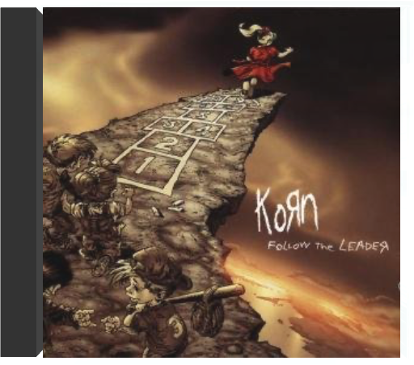
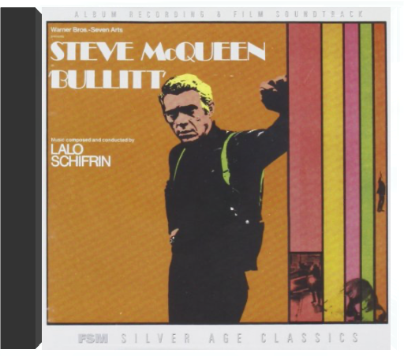

Mixture explosive de metal hardcore, d'indus, de grunge et de hip hop, la musique de Korn est une synthèse étonnante de toutes les tendances extrêmes du milieu des années 90. A la fois pesant et épileptique, baignant dans un flot de guitares distordues, truffé de brusques changements de rythmes et d'intensité, le néometal de Korn possède un pouvoir certain de fascination qui a vite propulsé le groupe vers le succès malgré son aspect anticommercial. La personnalité singulière des membres de ce combo américain et notamment de son chanteur flippé Jonathan Davis - tour à tour dépressif et furieux - y est également pour beaucoup. Ce premier album (le meilleur ?) contient déjà de nombreux moments forts ("Blind", "Clown", "Ball Tongue", "Faget"...) o๠révoltes, obsessions et frustrations sont expulsées avec une rage peu commune et un humour noir particulièrement grinçant. Du metal radicalement thérapeutique. — James Petit  Déjà auteur d'un premier album violent et remarqué en 1994, Korn n'a cessé de tourner pendant deux ans avant de réaliser l'incendiaire Life Is Peachy. Le monde entier a alors craqué pour le metal novateur et plein d'agressivité de ces Californiens. Aussi dynamique qu'un Rage Against The Machine, Korn joue sur des côtés plus torturés dus au caractère déjanté de son chanteur Jonathan Davis, qui alterne rage folle et relative sérénité. Le vigoureux "Adidas", premier tube de Korn, et le flamboyant "Twist" ne donnent qu'un avant- goût pimenté d'un disque très, très relevé. Une oeuvre radicale qui a depuis fait des adeptes. —Cyril Deluermoz  follow the leaderkorn Que vous les adoriez ou que vous les détestiez, les Californiens de Korn sont à l'origine d'un nouveau mouvement musical qui allie un hip-hop très agressif aux riffs les plus violents du speed-metal. Dès ses débuts en 1994, Korn faisait des émules tels que Deftones, Snot, ou Limp Bizkit. En 1996, le gentil Life Is Peachy permettait aux élèves de rattraper leurs maîtres, ce qui expliquera peut-être l'inspiration et le soin avec lequel Follow The Leader sera produit. Au lieu de se mettre sur pilotage automatique, Korn varie ses recettes, expérimentant différentes ambiances et dynamiques tout en intensifiant les mélodies et les recherches sonores. "Got The Life" est un mélange séduisant de rythmes disco, de voix rappelant leur période Epic et de guitares étincelantes. "Children Of The Korn" chanté par un invité de marque, Ice Cube, est un rap très efficace à la puissante ligne de basse. Alors que la furie psychédélique de la musique commence à faire sombrer l'auditeur dans une transe hystérique, Korn, assisté de Fred Durst de Limp Bizkit, nous lâche l'hilarant "All In The Family" et nous démontre par là même que le groupe n'est pas qu'enragé. —Jon Wiederhorn  bullitt (complete original tracks)lalo schifrin FSM presents one of the most quintessentially "cool" soundtracks ever: Lalo Schifrin's score for the classic urban crime drama, Bullitt (1968). The film stars Steve McQueen as San Francisco police detective Frank Bullitt, caught up with protecting a Chicago mobster from vengeful Mafia hit-men while dealing with an ambitious, sleazy politician portrayed by Robert Vaughn. With its riveting story, realistic settings, taut screenplay and quasi-documentary cinematography, it brought a new depth to McQueen's portrayal of tough characters (this one on the right side of the law). The CD also includes the never-before-released complete film soundtrack itself, recorded at the Warner Bros. scoring stage in Burbank by legendary engineer Dan Wallin. These tracks have been newly mixed and mastered from ½" three-track tape stored at the studio. While some score passages and cues are virtually identical to the record album, many of the film soundtrack's softer, moodier cues were not chosen for the LP-or had certain passages rewritten. And some were dropped from the film itself, so have never been heard before by the public-until now. The booklet includes a perceptive, in-depth essay on the film and its score by John Bender and detailed track-by-track commentary by Alexander Kaplan. Bullitt is an essential purchase for any "cool" soundtrack collection (or collector), and adds one more title to FSM's expanding catalog of scores by a living legend of film music. |  Lalo Schifrin - Bullitt: Original Motion Picture Soundtrack - LP Vinyl Album  Film encensé par la critique, Le Fabuleux Destin d'Amélie Poulain ne pouvait s'offrir qu'au plus parisien des musiciens bretons : Yann Tiersen. Auteur de plusieurs albums (L'Absente, Le Phare), dont certains titres de la bande originale sont d'ailleurs tirés, le compositeur offre à Montmartre ses plus belles notes depuis des lustres. "La Valse d'Amélie" nous ramène des décennies en arrière, pourtant le morceau semble on ne peut plus présent. Moderne tout en étant nostalgique, parisienne tout en étant teintée de couleurs provinciales, la musique du Fabuleux Destin d'Amélie Poulain est une pure merveille de fraîcheur ("La Redécouverte") et de spontanéite ("Le Moulin"). Simple, d'orchestration reduite – piano, accordéon, guitare – la musique respire la poésie de son auteur et comporte la même vivacité que le brillant metteur en scène Jean-Pierre Jeunet. Humaine, proche de nous, la bande originale du Fabuleux Destin d'Amélie Poulain devient, de par son lyrisme et son charme, le fabuleux destin de celui qui l'écoutera. —Didier Leprêtre  Limited 180gm audiophile vinyl LP pressing. Lee Dorsey began his career as a lightweight boxer in the early 1950s and moved on to become an influential African American pop and R&B singer during the 1960s. His successful period began when he met songwriter and record producer Allen Toussaint. In 1970, Dorsey recorded the Yes We Can album again with Toussaint together with the support band The Meters. Several of the songs were covered by major artists who scored hits with them later that decade; 'Yes We Can' by The Pointer Sisters and 'Sneakin' Sally Thru The Alley' by Robert Palmer. The other songs are straight up funky tracks and have a variety of styles and sounds. Included are the protest soul recording 'Who's Gonna' Help Brother Get Further' and the somewhat hilarious comedy song 'Would You'. All in all it stands as a great soul album for that time. |

Julien
Collection Total:
1 888 Items
1 888 Items
Last Updated:
Aug 16, 2021
Aug 16, 2021


 Made with Delicious Library
Made with Delicious Library